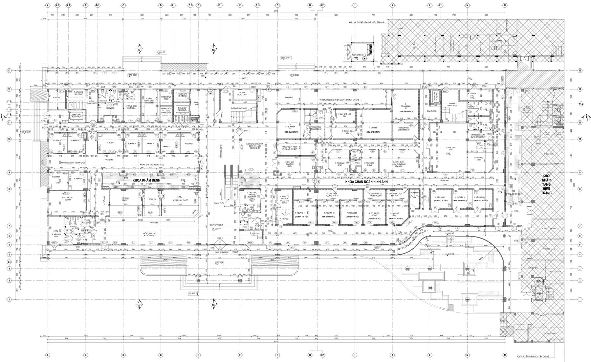

Báo cáo · 23/11/2026
Ứng dụng AI trong đọc và kiểm tra bản vẽ CAD, PDF
Báo cáo trình bày AI làm được gì với hồ sơ bản vẽ, nên dùng công cụ nào, quy trình kiểm tra đề xuất và cách cài đặt. Phần cuối kiểm chứng trên hồ sơ kiến trúc thật: tầng 1 của một công trình 5 tầng.
Hướng dẫn dùng nhanh: thiết lập một lần, sau đó chỉ cần thả file và gõ từ khóa62
phòng có ghi diện tích, cộng 1.013 m²
3/3
chuỗi kích thước trục cộng đúng kích thước tổng
51/55
mã cửa khớp số lượng giữa bảng thống kê và mặt bằng
4
điểm chênh lệch được đánh dấu cho kỹ sư xem
AI đọc được hồ sơ bản vẽ
Từ một file PDF dày, AI tự tìm đúng trang, đọc tên phòng, diện tích, ký hiệu cửa, bảng thống kê và chuỗi kích thước.
AI đối chiếu chéo, chỉ ra nguồn
Mỗi kết quả kèm trang và vị trí trên bản vẽ. Chỗ lệch có ảnh cắt để kỹ sư kiểm lại trong vài giây.
Kỹ sư vẫn là người kết luận
AI không tự kết luận lỗi. Ví dụ ĐV5 lệch số lượng nhưng xem bản vẽ thì không phải lỗi.
01
Bối cảnh
AI trong ngành xây dựng và cách phân công công việc.
Tiềm năng lớn, mức áp dụng còn thấp
50%
công việc văn phòng kỹ thuật có thể tự động hoá
27%
người trong ngành đang dùng AI trong công việc
32%
lãnh đạo cho biết đã gần đạt mục tiêu AI
Năng suất xây dựng 2000–2022 tăng 10%, sản xuất tăng 90%. Nguồn: McKinsey (07/2026), ASCE / Bluebeam (12/2025), Autodesk 2026 AI Construction Trends.
Phân công giữa AI và kỹ sư khi làm việc với hồ sơ bản vẽ
| Công việc | Phụ trách | Ví dụ ở tầng 1 |
|---|
02
Lựa chọn AI
So sánh năm công cụ theo nhu cầu đọc bản vẽ.
So sánh theo ba tiêu chí
| Công cụ | Đọc PDF | Nối CAD trên máy | Viết lệnh | Điểm code | Nhận xét |
|---|
Điểm viết code: SWE-bench Verified 02/2026, đo khả năng viết và sửa phần mềm, không đo trực tiếp việc đọc bản vẽ.
Khuyến nghị: Claude làm công cụ chính
Đọc PDF bản vẽ khổ lớn
Đọc cả chữ và hình: tên phòng, diện tích, ký hiệu, bảng thống kê.
Nối AutoCAD qua MCP
Đọc layer, block, text và kích thước ngay trong file DWG đang mở.
Tự viết lệnh xử lý số liệu
Bóc bảng, đếm ký hiệu, cộng chuỗi kích thước, đối chiếu chéo.
Có thể dùng kết hợp ChatGPT hoặc Gemini để tra cứu nhanh, Copilot nếu công ty dùng Microsoft 365.
03
Quy trình kiểm tra
AI đọc và đối chiếu, kỹ sư kết luận.
Sáu bước đề xuất
Ba nguyên tắc để kết quả kiểm lại được
Luôn chỉ nguồn
Mỗi con số kèm trang PDF, mã ký hiệu và vị trí trên bản vẽ.
Đếm theo hai đường
So bảng thống kê với mặt bằng, so tổng các đoạn với kích thước tổng.
Không tự kết luận lỗi
AI đánh dấu chỗ lệch kèm ảnh cắt. Lỗi hay không do kỹ sư quyết định.
04
Cài đặt và sử dụng
PDF dùng ngay. CAD cần nối AutoCAD qua MCP. Thiết lập một lần, sau đó chỉ cần thả file và gõ từ khóa.
Cách hoạt động
File PDF
Kéo vào khung chat, hỏi bằng tiếng Việt.
Claude Desktop
Đọc, đếm, đối chiếu, trả lời kèm nguồn.
AutoCAD
Đọc layer, block, text, kích thước qua MCP.
Các bước cài đặt
Windows 10/11, AutoCAD LT 2024 trở lên. MCP chạy bằng quyền tài khoản Windows: chỉ cài từ nguồn tin cậy và sao lưu file trước lần dùng đầu.
Hướng dẫn dùng nhanh
Thiết lập một lần, sau đó chỉ thả file và gõ từ khóaBa công cụ dùng chung một lời dặn và một bộ từ khóa. Claude là công cụ chính vì đọc được cả PDF và file CAD đang mở trong AutoCAD.
Bước 1Thiết lập lần đầu chỉ làm một lần
Chuẩn bị: máy tính, tài khoản Claude, các file mẫu của công ty (mẫu báo cáo kiểm tra hồ sơ, bảng thống kê mẫu, quy ước ký hiệu). Để Claude xuất được file Excel, Word: bấm tên tài khoản ở góc dưới bên trái → Settings → Capabilities, bật Code execution and file creation.
Tạo dự án
- Vào claude.ai, đăng nhập.
- Cột bên trái, bấm Dự án → + Dự án mới.
- Đặt tên Kiểm tra hồ sơ bản vẽ, bấm Tạo dự án.
- Bấm biểu tượng ghim để dự án luôn hiện ở cột trái.
Tải mẫu vào dự án
- Bên phải trang dự án, mục Ngữ cảnh, bấm dấu +.
- Chọn tải tệp lên, chọn các file mẫu.
Dán lời dặn
- Mục Hướng dẫn, bấm dấu +.
- Copy ô Lời dặn bên dưới, dán vào, sửa chỗ [ ], bấm Lưu.
Với file CAD
- Cài Claude Desktop và AutoCAD MCP theo các bước cài đặt ở trên.
- File CAD chỉ đọc được qua Claude Desktop, trên máy có cài AutoCAD.
Bước 2Dùng thử lần đầu
- Mở dự án vừa tạo, kéo thả file PDF hồ sơ vào khung chat.
- Gõ
TÌM TRANG – tầng 1rồi Enter. Claude trả về danh sách trang kèm tên bản vẽ. - Gõ tiếp
ĐỐI CHIẾU – cửa tầng 1. Muốn lấy bảng thì gõXuất file Excel.
Bước 3Các lần sau, chỉ 3 thao tác
- Mở dự ánBấm Kiểm tra hồ sơ bản vẽ ở cột trái.
- Đưa bản vẽ vàoThả file PDF vào khung chat. Với CAD thì mở bản vẽ trong AutoCAD.
- Gõ 1 từ khóaXem bảng từ khóa bên dưới, rồi Enter.
Luôn làm trong dự án. Đoạn chat mở từ trang chủ nằm ngoài dự án, khi đó Claude không biết mẫu và từ khóa.
Cách dùng giống Claude: tạo dự án một lần, sau đó mỗi lần chỉ thả file và gõ từ khóa. Lời dặn và từ khóa dùng lại nguyên như phần Claude.
Bước 1Thiết lập lần đầu chỉ làm một lần
Tạo dự án
- Vào chatgpt.com, đăng nhập.
- Cột bên trái, bấm New project.
- Đặt tên Kiểm tra hồ sơ bản vẽ, tạo dự án.
- Bấm ••• ở góc trên bên phải → Ghim dự án.
Tải mẫu vào dự án
- Trong trang dự án, mở tab Nguồn → thêm tệp.
- Chọn các file mẫu, bấm Open.
Dán lời dặn
- Bấm ••• → Cài đặt dự án.
- Dán ô Lời dặn vào ô Hướng dẫn, sửa chỗ [ ], bấm Lưu.
Bước 2Các lần sau, chỉ 3 thao tác
- Mở dự ánBấm tên dự án ở cột trái, gõ vào ô trò chuyện mới của dự án.
- Thả file PDFHoặc bấm dấu + → chọn file.
- Gõ 1 từ khóaDùng y như bảng từ khóa bên dưới.
Lưu ýRiêng khi dùng ChatGPT
- File CAD: ChatGPT chưa nối thẳng với AutoCAD trên máy. Xuất bản vẽ ra PDF (lệnh PLOT, chọn máy in DWG To PDF) rồi làm như file PDF. Việc đếm block, đo theo tọa độ chỉ làm được với Claude và AutoCAD MCP.
- Tắt chia sẻ dữ liệu: bấm tên tài khoản → Settings → Data controls, tắt Improve the model for everyone.
- Gõ ở trang chủ bên ngoài dự án thì ChatGPT không biết mẫu và từ khóa.
Gemini mạnh với tài liệu rất dài, hợp khi cần đọc cả bộ hồ sơ nhiều trăm trang trong một lần. Trong Gemini, dự án được gọi là Gem.
Bước 1Thiết lập lần đầu chỉ làm một lần
Chuẩn bị: máy tính (Gem chỉ tạo được trên máy tính, tạo xong dùng được cả trên điện thoại), tài khoản Google, các file mẫu. Hồ sơ dày nên dùng gói Google AI Pro.
Tạo Gem
- Vào gemini.google.com, đăng nhập.
- Cột bên trái, bấm Gem → Gem mới.
- Ô Tên: gõ Kiểm tra hồ sơ bản vẽ.
Tải mẫu vào Gem
- Mục Kiến thức, bấm dấu + / Thêm tệp.
- Chọn các file mẫu.
Dán lời dặn
- Dán ô Lời dặn vào ô Hướng dẫn, sửa chỗ [ ].
- Bấm Lưu.
Bước 2Các lần sau, chỉ 3 thao tác
- Mở GemCột trái, bấm Kiểm tra hồ sơ bản vẽ trong mục Gem.
- Thả file PDFHoặc bấm dấu + → Tải tệp lên.
- Gõ 1 từ khóaDùng y như bảng từ khóa bên dưới.
Lấy file: bên dưới câu trả lời, bấm Chia sẻ và xuất → Xuất sang Google Trang tính (với bảng) hoặc Google Tài liệu, rồi tải về dạng Excel, Word.
Lưu ýRiêng khi dùng Gemini
- File CAD: như ChatGPT, xuất bản vẽ ra PDF rồi mới đưa vào Gem.
- Không chia sẻ Gem cho người khác, vì người được chia sẻ xem được cả lời dặn và file mẫu.
- Không gõ ở khung chat trang chủ, luôn mở từ Gem.
Lời dặn dán vào dự án
Dùng chung cho Claude, ChatGPT, GeminiCopy toàn bộ ô dưới đây, dán vào phần Hướng dẫn của dự án, sửa chỗ trong ngoặc vuông.
Bạn là kỹ sư hỗ trợ kiểm tra hồ sơ thiết kế kiến trúc của [tên bộ phận]. QUY TẮC CHUNG - Viết tiếng Việt, ngắn, rõ. Kích thước ghi mm, diện tích ghi m². - Mọi con số phải kèm nguồn: số trang PDF, tên bản vẽ, mã ký hiệu. Với file CAD thì kèm layer, tên block hoặc tọa độ. - Không tự đặt số liệu, mã ký hiệu, kích thước. Thiếu thì ghi [CẦN BỔ SUNG], không chắc thì ghi [CẦN KIỂM TRA]. - Không tự kết luận lỗi thiết kế. Chỗ lệch ghi "Chênh lệch – kỹ sư xem", kèm vị trí (trục, phòng) để kỹ sư mở ra xem. - Hồ sơ dày mà tôi chưa nêu phạm vi thì hỏi đúng một câu: kiểm tầng nào, hạng mục nào. - Kết quả dạng bảng thì trình bày trong chat. Tôi gõ "Xuất file Excel" hoặc "Xuất file Word" thì xuất đúng bảng đó thành file. VỚI FILE CAD (khi đã nối AutoCAD) - Chỉ đọc. Không sửa, không xóa, không lưu đè bản vẽ khi tôi chưa cho phép rõ ràng. - Trước khi làm, đọc danh sách layer và block của bản vẽ đang mở, báo lại một dòng. - Đếm theo block và layer, không đoán theo hình. Chữ và kích thước lấy từ đối tượng trong bản vẽ. TỪ KHÓA (có dấu hoặc không dấu đều được; có thể thêm phạm vi sau từ khóa) - DANH MỤC: liệt kê các trang trong file: số trang, tên bản vẽ, tầng, hạng mục. - TÌM TRANG: tìm các trang thuộc phạm vi tôi nêu, cho biết mỗi trang là bản vẽ gì. - BÓC BẢNG: đọc bảng thống kê thành bảng: mã, kích thước, số lượng, ghi chú, trang nguồn. - ĐẾM: đếm ký hiệu (PDF) hoặc block (CAD) theo từng mã; bảng: mã, số lượng, trang hoặc layer. - ĐỐI CHIẾU: so bảng thống kê với số đếm trên mặt bằng; bảng: mã, theo bảng, trên mặt bằng, chênh lệch, vị trí cần xem. - KÍCH THƯỚC: cộng từng chuỗi kích thước trục, so với kích thước tổng, báo chỗ không khớp. - DIỆN TÍCH: liệt kê phòng và diện tích ghi trên bản vẽ, cộng theo khu, so với tổng nếu có. - TRA CỨU: trả lời câu hỏi về hồ sơ, kèm trang và mã nguồn. - SOÁT LỖI: liệt kê mã ký hiệu không có trong bảng, ghi chú mâu thuẫn, số liệu lệch giữa các bản vẽ. - TRỌN GÓI: lần lượt làm TÌM TRANG, BÓC BẢNG, ĐỐI CHIẾU, KÍCH THƯỚC, rồi lập danh sách điểm cần kỹ sư xem.
Từ khóa dùng nhanh
Thả file kèm một từ khóa, có thể thêm phạm vi phía sau. Ví dụ: ĐỐI CHIẾU – cửa đi tầng 1. Gõ chữ thường hoặc không dấu cũng được, ví dụ doi chieu.
| Gõ | AI sẽ làm | Ví dụ khi kiểm tầng 1 (mục 05) |
|---|---|---|
| DANH MỤC | Liệt kê các trang: số trang, tên bản vẽ, tầng | 174 trang, nhóm theo tầng |
| TÌM TRANG | Tìm các trang thuộc phạm vi cần kiểm | Tầng 1: trang 2, 9, 19, 21–25 |
| BÓC BẢNG | Đọc bảng thống kê thành bảng tính, kèm trang nguồn | 55 mã cửa tầng 1, trang 25 |
| ĐẾM | Đếm ký hiệu trên PDF hoặc block trong CAD theo mã | 246 ký hiệu cửa trên trang 9 |
| ĐỐI CHIẾU | So bảng thống kê với số đếm, chỉ chỗ lệch | 51/55 mã khớp, 4 mã cho kỹ sư xem |
| KÍCH THƯỚC | Cộng chuỗi kích thước trục, so với tổng | 3/3 chuỗi khớp |
| DIỆN TÍCH | Liệt kê phòng, diện tích, cộng theo khu | 62 nhãn, 1.013 m² |
| TRA CỨU | Trả lời câu hỏi kèm trang nguồn | Cửa Đ1 quy cách thế nào? |
| SOÁT LỖI | Tìm mã không có trong bảng, ghi chú mâu thuẫn giữa các bản vẽ | Trước khi gửi góp ý cho thiết kế |
| TRỌN GÓI | Làm lần lượt từ tìm trang đến đối chiếu, lập danh sách điểm cần xem | Ra kết quả như mục 05 |
Câu sửa nhanh
Kết quả chưa vừa ý thì gõ tiếp ngay bên dưới, không cần làm lại.
| Muốn | Gõ |
|---|---|
| Thu hẹp phạm vi | Chỉ làm trang [...]. |
| Sửa chỗ đọc sai | Mã [...] ở trang [...] đọc sai, đúng là [...]. Làm lại. |
| Cần vị trí | Ghi rõ vị trí từng ký hiệu theo trục, phòng. |
| Cần ảnh để kiểm | Cắt ảnh chỗ [...] để tôi xem. |
| Bị cắt giữa chừng | Viết tiếp. |
| Lấy file | Xuất file Excel. / Xuất file Word. |
Lưu ý
- Chỉ đưa hồ sơ lên AI khi hợp đồng và quy định công ty cho phép. Không đưa hồ sơ mật.
- PDF xuất từ CAD đọc chính xác hơn PDF scan. Chữ quá nhỏ, chữ xoay dọc, font cũ dễ đọc sai, nên kiểm lại số liệu quan trọng.
- Với file CAD: sao lưu trước, để AI chỉ đọc. Chỉ cho sửa khi đã kiểm tra kỹ.
- Luôn đọc lại các chỗ [CẦN KIỂM TRA], [CẦN BỔ SUNG] và các điểm chênh lệch trước khi gửi đi.
Câu lệnh mẫu
| Loại | Câu lệnh |
|---|
05
Kiểm chứng trên hồ sơ tầng 1
Toàn bộ số liệu dưới đây do AI đọc từ file PDF hồ sơ kiến trúc, có ghi trang nguồn.
5.1 Hồ sơ đầu vào
Từ file PDF 174 trang, AI tự xác định 7 trang thuộc tầng 1 và thông tin cần lấy ở mỗi trang.
| Trang | Bản vẽ | Thông tin AI trích xuất |
|---|---|---|
| 2 | Mặt bằng ghi chú, bố trí nội thất | Tên phòng, diện tích, số chỗ ngồi, ghi chú |
| 9 | Mặt bằng kích thước | Lưới trục, chuỗi kích thước, ký hiệu cửa, cao độ |
| 19 | Chi tiết kỹ thuật tầng 1, 2 | Mã chi tiết CT…-T1 và vị trí tham chiếu |
| 21–24 | Chi tiết cửa đi, cửa sổ | Mặt đứng, mặt cắt, quy cách kính, phụ kiện |
| 25 | Bảng thống kê cửa đi, cửa sổ | Mã, kích thước, số lượng theo từng tầng |
5.2 Rà soát mặt bằng kích thước
Trang 9AI đánh dấu các điểm đã kiểm tra trên mặt bằng. Chọn một điểm để xem nội dung.

5.3 Kiểm tra chuỗi kích thước
Trang 9AI cộng từng đoạn trong chuỗi kích thước và so với kích thước tổng ghi trên bản vẽ.
| Chuỗi | Số đoạn | Tổng các đoạn (mm) | Ghi trên bản vẽ (mm) | Kết quả |
|---|
Lưới trục gồm 22 trục chữ (A đến N, có trục phụ) và 17 trục số (1 đến 13, có trục phụ). Cao độ ±0.000 tương đương +4,20 m hệ VN2000.
5.4 Phòng và diện tích
Trang 262 nhãn diện tích trên mặt bằng, tổng 1.013 m². Bảng dưới liệt kê các phòng chính theo khu.
| Phòng | Diện tích |
|---|
5.5 Cửa đi, cửa sổ: bảng thống kê đối chiếu mặt bằng
Trang 25 và trang 955 mã, 250 bộ (125 cửa đi, 125 cửa sổ). AI đếm được 246 ký hiệu trên mặt bằng. 51 mã khớp, 4 mã chênh lệch.
| Mã | Loại | Rộng × cao (mm) | Mô tả | Bảng | Mặt bằng | Kết quả |
|---|
5.6 Các điểm chênh lệch
AI chỉ ra vị trí và đưa ảnh cắt. Kết luận cuối cùng do kỹ sư đưa ra.
| Mã | Bảng | Mặt bằng | Nhận định | Đề xuất |
|---|
5.7 Hỏi đáp trên hồ sơ
Một số câu hỏi thực tế và câu trả lời của AI, kèm trang nguồn để đối chiếu.
KẾT LUẬN
Kết luận và kiến nghị
- AI đọc và hiểu được hồ sơ bản vẽ PDF.
Trên tầng 1: tìm đúng 7 trang, bóc 62 nhãn diện tích, 55 mã cửa, 3 chuỗi kích thước, trả lời câu hỏi kèm trang nguồn.
- Giá trị lớn nhất là đối chiếu chéo.
51/55 mã cửa khớp, 4 điểm chênh lệch được khoanh vùng kèm ảnh, kỹ sư chỉ cần xem 4 chỗ thay vì đếm lại 250 bộ.
- Bước tiếp theo với file CAD.
Nối AutoCAD qua MCP để đo theo tọa độ thật: chiều dài tường, diện tích ốp lát, khoảng cách tới trục, rồi đối chiếu với PDF.
- Áp dụng có kiểm soát.
Giữ nguyên tắc chỉ nguồn và kỹ sư kết luận; bắt đầu với các việc đếm, tra cứu, đối chiếu trước khi mở rộng.